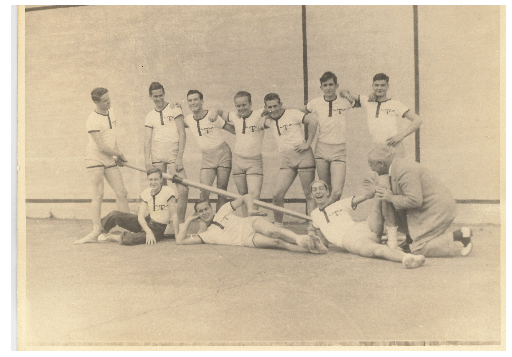

MAKING THE FILM

DEC 2016
CREATING THE PROPOSAL
The first step of the project was to write an outline. In nine pages, I outlined everything anyone needed to know about the project, in hopes of getting approval for it later on. You can read a version of the proposal here.

FEB 2017
ANNOUNCE THE PROJECT
A major goal of this project is to involve as many people as possible in celebrating the centennial anniversary of Tabor Crew. To do this, we spread the word via email, social media, and word of mouth.
SPRING 2017
RACE & PRACTICE FOOTAGE
During races and practices, we'd ride the launch and get a wide array of angles from in the boat, in the launch, and in the air. We were able to capture the beauty of rowing in ways we've never been able to before.
JUN 2017
HENLEY ROYAL REGATTA
The Henley Royal Regatta has played a major role in the history of Tabor Crew, and Tabor's entry into the regatta was a perfect opportunity to capture footage from the event, speak with alums, and get a better sense for Tabor's place in Henley history.
JUL 2017
STARTING THE EDITING
After everything is recorded and organized, it's time to put it all together. On Final Cut Pro, we take days worth of footage and condense it down to an hour-long story. It's a process that takes hundreds of hours and lots of patience.
JUL 2017
REWORK THE FILM'S FLOW
After the first phase of editing, the film was nearly two hours long. We made some critical decisions as to what we need to keep, what needs to go, and what can be altered to fit a reasonable time-frame.

AUG 2017
WRAP-UP BEFORE PAUSE
Since all the editing was being done at Tabor before we headed to school, we needed to make sure we had as much done as possible before we took a break during the transition.

OCT 2017
REFORMAT THE FILM
The presentation of the film is crucial, and we made the decision to shift the film's format from a traditional 16:9 aspect ratio to a less conventional 2:1 ratio, giving a slightly more cinematic look.
NOV 2017
CREATE THIS WEBSITE
We wanted to be able to host all the film's critical information online, and thus we created this website. Built by hand using thousands of lines of code, we hope that the film can live here for years to come.
WINTER 2018
ADD TEXT & GRAPHICS
Text and graphics are the final touch to creating the documentary. Titles, subtitles, and other textual information give the viewer the information they need to fully understand the subject.
WINTER 2018
CREATE A TRAILER
A good movie needs a good trailer. By creating the trailer, we give the prospective audience an idea of the subject of the film and hopefully entice them to see the film in May.
WINTER 2018
HOLD INITIAL SCREENINGS
It's important to pass the film through many sets of eyes before finalizing it. We meet with a variety of audiences and showcase the film, looking for changes that need to be made.
SPRING 2018
MAKE FINAL CHANGES
In this final stage, we look for the smallest of details, making sure every second of the film is exactly as we want it to be. It is the last editing step before the premiere.
MAY 2018
DISTRIBUTE FILM ONLINE
The film will be available free to the masses after the premiere. We will promote it on social media, video platforms, and throughout the Tabor Academy community so that as many people as possible can hear the amazing stories.
JAN 2017
GETTING THE GO-AHEAD
We sat down and talks to numerous members of the Tabor Community to get advice and clearance to start this ambitious project, including the Head of School, Communications Office, CFO, crew coaches, Advancement Office, and more.

MAR 2017
SPRING TRAINING FOOTAGE
The annual Spring Training trip was the first opportunity to capture on-the-water footage of the crew program. From the launch, on land, and from the air, we got our first footage showing the rowers in action.
SPRING 2017
STARTING THE INTERVIEWS
The interviews are the core of the Tabor Crew story. We sat down with over thirty rowers, coaches, alums, and friends of the program, hearing a diverse range of stories and feelings about the crew program. Interviews ranged from ten minutes in length to nearly three hours.
JUL 2017
COMPILING THE FOOTAGE
With days of footage, and hundreds of photos and documents, it took weeks to sort, label and search the content that we had before we could start the editing process.

JUL 2017
WRITE & RECORD NARRATION
Only a portion of the documentary is narrated, but we had to make sure that every word was just right. After we wrote the script, we sat down with Tabor History Teacher Roxie Bratton and recorded a narration track.

JUL 2017
FINISH THE INTERVIEWS
The interview process lasted over a several month period, but it was essential to finish the interview process before I began the full editing process. To get all the interviews, we had to travel throughout the country and the world.
OCT 2017
MAKE FIRST SHORT FILM
During the pause after leaving for school, we decided to create a short film using a cut portion of the full documentary. The film was about Head of the Charles, and discussed what an incredible experience and opportunity it is to be able to race in it. You can watch the film here.
NOV 2017
PLAN THE PREMIERE
It is important to plan to premiere far in advance to ensure everything will go exactly as hoped. Securing a date and venue, working on logistics, and planning the promotion all occurs months in advance.
DEC 2017
FINISH EDITING THE FILM
At this stage, all the core elements of the film will be in place and the flow will be determined. After this, all the "extra" elements will be added, making the film complete.
WINTER 2018
FIXING COLOR & SOUND
This step is often forgotten or overlooked, but is critical to making the film look professional. We take a careful look at the colors and sounds in the documentary, making small changes and enhancements to make sure everything looks and sounds clear and crisp.
WINTER 2018
FIND & ADD MUSIC
It is often said that music can make or break a film, and a documentary is no different. Countless hours are spent searching through music, looking for the best tracks to complement the stories. Then, careful work is done to match it to the film.
WINTER 2018
CONTINUE CREATING SHORTS
The main documentary cannot possibly hold all of the remarkable stories in the history of Tabor Crew. Short films of less than ten minutes will provide some other stories that provide a more intimate look into some aspects of the program or people who have been part of it.
MAY 2018
HOLD FILM PREMIERE
The premiere will be a celebration of a century of crew at Tabor, and will invite the Tabor community and the local population to learn more about the rich history and reminisce about their time on the team.